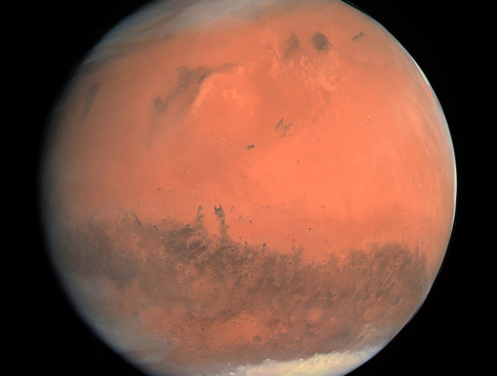
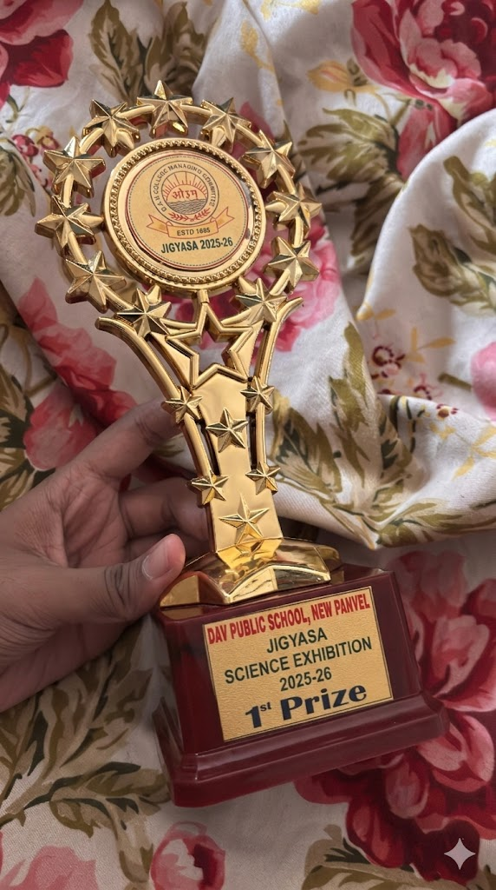

XTREAME AEROSPACE

About Us
Meet Rupam Bose and Aayush Varkhale, students of Class 8 from DAV Public School.
Read Full Story...
Mars Mission
Full research documentation on Martio City and terraforming.
View Research...A Student-Led Initiative


We are Rupam Bose and Aayush Varkhale, two passionate students from Class 8 at DAV Public School, New Panvel. What began as simple curiosity about the night sky has grown into a dedicated mission driven by research, discipline, and a deep interest in space science. Our journey truly accelerated when we participated in the Jigyaasa Science Exhibition 2025–26, where our project earned first prize. That achievement was not just a moment of celebration—it became the turning point that strengthened our commitment toward space research and future exploration. From that day forward, space was no longer just a subject we admired; it became a field we actively pursued. We began investing our free time in studying astronomy, planetary science, aerospace concepts, and future human space settlement ideas. While many students spend their leisure time on entertainment, we consciously chose to sacrifice portions of our holidays, fun activities, and even personal expenses to deepen our understanding of space technology and research. This was not out of pressure, but out of genuine passion and curiosity about humanity’s future beyond Earth. Our vision extends beyond simply learning about space—we aim to contribute meaningfully to it. Inspired by the remarkable work of global space agencies, we aspire to collaborate in the future with organizations such as NASA, ISRO, and other international space research bodies. Our long-term conceptual goal is the development of real, sustainable extraterrestrial habitats, including the proposed Lunaris City on the Moon and Martio City on Mars. Through these ideas, we hope to support the next phase of human civilization: becoming a multi-planetary species. We strongly believe that while humanity has achieved incredible technological progress on Earth, the next true game-changing step is not just moving from place to place on our planet, but uplifting human civilization from planet to planet. This vision is not driven by the desire to abandon Earth—our home will always remain our primary responsibility. In fact, we firmly support protecting and restoring Earth’s environment. However, we also recognize the importance of expanding research and development beyond our planet to ensure long-term survival, scientific advancement, and technological growth for humanity. Our work so far has involved studying Mars’ atmosphere, the possibility of water presence, terraforming concepts, artificial magnetic shielding, spaceport infrastructure, and sustainable living domes for astronauts. We continuously document our ideas, refine our models, and learn from existing scientific research. We understand that many of these goals are long-term and complex, but every major achievement in history began with students, thinkers, and dreamers who were willing to ask bold questions and work consistently toward answers. What defines our initiative is not just imagination, but continuous effort. We believe in disciplined research, step-by-step learning, and practical thinking. Every concept we study—whether it is the Mars water cycle, atmospheric generation, or space habitat design—is approached with the mindset of future engineers and researchers. We are still at the beginning of our journey, but our commitment remains strong and focused. Through this platform, we aim to share our research notes, concepts, and learning progress with fellow students, educators, and space enthusiasts. We hope our work inspires other young minds to explore science deeply and think beyond conventional boundaries. The future of space exploration will belong to the next generation, and we are determined to prepare ourselves to be part of that future. Kindly support us in our journey, and we value your precious time for visiting us. Thanks.
Lunar Mission: Constructing Lunaris City
Lunar Mission Description: The Lunar Mission represents the foundational stepping stone in our long-term vision for extraterrestrial human settlements. Before we can reliably reach and colonize Mars, we must first master the logistics, engineering, and survival strategies closer to home. Our core research in this domain focuses on the conceptualization and development of Lunaris City—a highly functional lunar conurbation designed to act as a sovereign human settlement and an advanced logistical hub. Lunaris City is not just a scientific outpost; it is envisioned as humanity's gateway to the broader solar system. By establishing a permanent base on the Moon, we can utilize it as a staging ground for deeper interplanetary exploration. The Moon's lower gravity makes it an ideal location for launching spacecraft, allowing for significant fuel conservation and heavier payloads when initiating missions to Mars and beyond. One of the greatest challenges of a permanent lunar presence is surviving the extreme environment, particularly the lack of an atmosphere, severe temperature fluctuations, and constant exposure to cosmic radiation and micrometeorites. To address these threats, our structural research focuses on heavily shielded habitats. We propose the integration of pressurized geodesic pods and deep subterranean modules. Rather than transporting heavy building materials from Earth, our designs rely heavily on in-situ resource utilization (ISRU). These modules would be buried and reinforced using regolith-derived composites—processing the native lunar dust to create thick, durable shielding that naturally protects inhabitants from the harsh realities of space. Ultimately, Lunaris City serves a purpose far greater than engineering. It is a critical component of expanding human civilization beyond Earth. We firmly believe that overcoming the challenges of establishing a sovereign settlement on the Moon is necessary for the intellectual, technological, and cultural flourishing of the human species. By testing life support loops, refining power generation grids, and mastering resource independence on the Moon, we are directly paving the way for our ultimate goal: a thriving, multi-planetary civilization.
MISSION NOTES : LUNARIS CITY.
I. EXECUTIVE SUMMARY
The establishment of a permanent human settlement on the Moon has transitioned from science fiction to a viable scientific and economic goal. This initiative represents a massive engineering and socio-economic leap designed to create a self-sustaining interplanetary civilization. While the capital expenditure is projected to exceed $2 billion, the long-term returns in technology, minerals, and scientific knowledge are expected to be incalculable.
II. STRATEGIC MISSION OBJECTIVES
The project aims to build a modular settlement for an initial population of 1,200, with future expansion to 10,000 inhabitants within 20 years.
Scientific Advancement: Establish deep-space communication hubs and laboratories for studying lunar soil (regolith).
Energy Independence: Mine Helium-3 for nuclear fusion energy to power Earth.
Closed-Loop Life Support: Integrate hydroponics and bioregenerative recycling for air and water.
Governance: Manage operations via a trilateral charter between India, the USA, and Europe.
III. THE PARTNERSHIP: ROLES AND RESPONSIBILITIES
The Lunar Metropolitan Governance Accord (LMGA) will oversee the city, utilizing the specific strengths of each agency:
ISRO: High-efficiency cargo delivery using LVM-3 rockets, automated regolith mining, and lunar navigation mapping.
NASA: Deep-space communication relays, habitat pressurization systems, and medical centers for low-gravity health.
ESA: Autonomous robotic builders, ultra-thin solar power fields, and water-ice extraction technology.
IV. GEOGRAPHICAL SITE AND ARCHITECTURE
The city will be located at the Shackleton Crater at the Moon's South Pole.
Site Benefits: The area offers near-constant sunlight for power and contains water ice in shadowed regions for life support and fuel.
Structure: The city features a radial design with central administration and concentric rings for living and industry.
Construction: Habitats will be inflatable modules covered in 3D-printed regolith to protect against space radiation and micrometeorites.
V. INFRASTRUCTURE AND TECHNOLOGY
Energy Systems
Solar: High-efficiency arrays equipped with dust-removing nanobots.
Nuclear: Modular fission reactors to provide steady power during the 14-day lunar night.
Thermal: Molten salt storage to retain heat during dark periods.
Transportation
Surface: Pressurized Maglev rail lines connecting different sectors.
Transit: The Lunar Orbital Platform-Gateway will serve as the docking station for arrivals from Earth.
Rovers: Pressurized vehicles for scientific expeditions outside the city.
VI. ECONOMIC AND SOCIETAL FRAMEWORK
The metropolis is designed to be economically self-sufficient within three decades.
Revenue Streams: Income will be generated through space tourism, mineral extraction, and satellite maintenance services.
Sustainability: Food will be grown in multi-tiered vertical farms (hydroponics), and air will be recycled through algae-based systems.
Psychological Health: To manage the stress of living in space, crews will rotate frequently and use Virtual Reality (VR) for "Earth immersion".
VII. CONCLUSION
The Tri-Agency Lunar Megapolis is a testament to human ingenuity. It serves as a launchpad for missions to Mars and a permanent home for humanity in the stars. By combining the resources of ISRO, NASA, and ESA, we are turning the Moon into the next district of human civilization.
Mars Mission: Exploring the Red Planet
Mars mission description:
Our Mars Mission initiative is a bold, student-led effort driven by curiosity, disciplined research, and a deep passion for the future of human space exploration. Mars — often called the Red Planet — has fascinated scientists, engineers, and dreamers for generations because it represents the most realistic next step for humanity beyond Earth. Through this initiative, we aim to study, analyze, and simulate the key technologies, scientific principles, and mission architectures required to make sustained Mars exploration and eventual human presence a practical reality. What began as a strong interest has steadily evolved into a structured learning journey grounded in real scientific thinking. At its core, our Mars mission work is built on continuous research and evidence-based understanding. Rather than relying only on imagination, we carefully examine past and ongoing Mars missions conducted by leading space agencies. By studying rover landings, orbital insertions, propulsion systems, and surface operations, we gain insight into the immense complexity behind every successful mission. Each Mars mission represents years of planning, precise engineering, and international collaboration. Understanding this reality has helped shape our mindset: meaningful progress in space exploration comes from patience, accuracy, and deep technical knowledge. One of the most important pillars of our research is the Martian environment itself. Mars is both promising and extremely hostile. The planet has a very thin atmosphere composed mostly of carbon dioxide, surface temperatures that can drop below –100°C, frequent dust storms, and significantly higher radiation exposure compared to Earth. These conditions make long-term human survival challenging but not impossible. Through our studies, we explore how future explorers might adapt to these conditions using advanced engineering and scientific solutions. We examine atmospheric processing, thermal control systems, radiation shielding techniques, and habitat pressurization strategies that could support human life. Water availability on Mars is another major focus area. Evidence suggests that water ice exists beneath the Martian surface and at the polar caps. Extracting and utilizing this water is critical for any sustainable mission. We study concepts related to ice mining, purification systems, and water recycling loops. Water is not only essential for human survival but can also be split into hydrogen and oxygen for rocket fuel and breathable air. This idea — known as in-situ resource utilization (ISRU) — is one of the most powerful enablers of long-term Mars missions. By producing resources locally instead of transporting everything from Earth, mission costs and complexity can be significantly reduced. Energy generation is equally crucial for Mars operations. Any sustained presence on Mars will depend on reliable and redundant power systems. Our research explores multiple energy pathways, including solar farms optimized for Martian sunlight levels, advanced battery storage systems, radioisotope power systems, and small modular nuclear reactors. Mars receives less sunlight than Earth, and global dust storms can block solar radiation for weeks, so energy resilience is a major engineering challenge. Studying these limitations helps us understand why future Mars bases will likely rely on hybrid energy systems rather than a single power source. Another key dimension of our initiative is mission architecture — the complete journey from Earth to Mars and back. Human missions to Mars involve extremely precise launch windows that occur roughly every 26 months when the planets align favorably. We study transfer orbits such as the Hohmann transfer, transit durations, fuel requirements, and the complexities of entry, descent, and landing (EDL) in Mars’ thin atmosphere. Landing heavy human-class payloads on Mars is far more difficult than landing small robotic rovers, and this remains one of the biggest technical hurdles. By understanding these constraints, we develop a more realistic appreciation of the engineering breakthroughs still required. Human factors are also central to our research. A crewed Mars mission is not just an engineering challenge — it is a human endurance challenge. Astronauts would spend months in deep space exposed to microgravity, radiation, confinement, and communication delays. Once on Mars, they would operate in an isolated, extreme environment with limited real-time support from Earth. We explore psychological health considerations, crew selection factors, habitat ergonomics, and the importance of autonomy in medical and operational decision-making. Long-duration human survival requires both technological and human-centered design thinking. Surface operations on Mars present another fascinating area of study. After landing, astronauts must establish habitats, deploy power systems, begin resource extraction, and conduct scientific research — all in a harsh and dusty environment. We examine concepts such as robotic precursors that prepare landing sites before humans arrive, autonomous construction using Martian regolith, pressurized rovers for long-distance travel, and modular habitat expansion strategies. The goal of our research is to understand how an initial outpost could gradually grow into a more permanent settlement. Sustainability is a guiding theme throughout our Mars mission work. Short-term visits to Mars are scientifically valuable, but the long-term vision of humanity becoming a multi-planetary species requires self-sustaining systems. We study closed-loop life support, where air, water, and waste are continuously recycled. We also explore controlled-environment agriculture for growing food on Mars using hydroponics or aeroponics. Producing food locally reduces dependence on Earth resupply and increases mission resilience. Every sustainable system on Mars must be highly efficient, fault-tolerant, and repairable with limited resources. Our long-term conceptual vision includes what we call **Martio City** — a future self-sustaining human settlement on Mars. While we fully understand that such a development is decades away and will require global collaboration, advanced robotics, and major breakthroughs in propulsion and life support, studying its foundational requirements today helps build the right scientific mindset. Martio City represents more than a physical settlement; it symbolizes humanity’s gradual transition from single-planet dependency toward responsible multi-planet expansion. Importantly, our Mars mission initiative is not motivated by the idea of abandoning Earth. We strongly believe that Earth will always remain humanity’s primary home. However, Earth is currently facing significant environmental and resource challenges. Technologies developed for Mars — such as ultra-efficient recycling systems, precision agriculture, renewable energy optimization, and closed ecological systems — have direct applications for improving sustainability on Earth. In this sense, Mars research becomes a powerful driver of innovation that benefits life on our own planet. Our approach to this initiative is grounded in realism. We recognize that as students, we are at the very beginning of a long educational journey. Becoming contributors to real aerospace and space science efforts will require years of study in physics, mathematics, engineering, computer science, and related fields. However, every expert once started with curiosity. What matters most at this stage is building strong fundamentals, maintaining disciplined learning habits, and continuously expanding our understanding of complex systems. Through this platform, we aim to document our research journey, share our learning progress, present our conceptual designs, and inspire other students who are curious about space science. We believe that early exposure to real scientific thinking can motivate young minds to pursue meaningful careers in STEM fields. Space exploration has always been a field where bold thinking meets rigorous engineering, and we want to cultivate both aspects in our work. The Mars Mission initiative reflects persistence, teamwork, and long-term vision. Every paper we read, every system we analyze, and every simulation we attempt strengthens our foundation. Step by step, concept by concept, we are working to understand what it truly takes to extend human presence beyond Earth. The road ahead is long and challenging, but that is exactly what makes this journey meaningful. Our mission is simple in principle but ambitious in scope: to learn deeply, think critically, and prepare ourselves to contribute — even in a small way — to the future of human space exploration.
MISSION NOTES : TERRAFORMING & ADVANCED SYSTEMS.
Terraforming Chapter
Date: 05/03/2026
Mars Mission
MISSION MARS EXPLORATION
Mars is the fourth planet from the Sun and is commonly known as the “Red Planet” because its surface appears reddish due to iron oxide (rust) present in its soil and rocks. It is smaller than Earth, about half its size, and has a colder and drier environment. Scientists and space agencies such as NASA and ISRO have studied Mars through missions like the Mars Orbiter Mission to understand its structure, history, and the possibility of life. Mars has a day length similar to Earth, about 24.6 hours, and it also experiences seasons due to its tilted axis, making it one of the most Earth-like planets in the solar system.
One of the most interesting aspects of Mars is the presence of water. Although Mars does not have flowing rivers or oceans today, scientists have found strong evidence that water existed in the past. Dry river channels, lake beds, and minerals that form in water suggest that Mars was once a wetter planet. At present, most of the water on Mars exists in frozen form at the polar ice caps and beneath the surface as underground ice. If all this ice were melted, it is estimated that Mars could be covered by a shallow ocean about 20 to 30 meters deep across the planet. However, due to very low atmospheric pressure and extremely cold temperatures, liquid water cannot remain stable on the surface for long, making present-day Mars a dry and frozen desert.
When it comes to life support, Mars is not suitable for humans or most forms of life in its current condition. There is no breathable oxygen, and the atmosphere is very thin, composed mainly of carbon dioxide. The average temperature on Mars is around -60°C, which is far too cold for human survival. Additionally, Mars lacks a strong magnetic field, which means it is exposed to harmful radiation from the Sun and space. The low gravity, about 38% of Earth’s gravity, can also affect human health over long periods. Despite these challenges, scientists believe that simple microbial life might have existed on Mars in the past when water was abundant. Some researchers even think that microscopic life could still survive underground where conditions might be slightly warmer and protected.
For humans to live on Mars in the future, advanced technology would be required. This includes building sealed habitats or domes where air pressure and oxygen levels can be controlled, extracting water from ice deposits, producing oxygen from carbon dioxide, and growing food in controlled environments. Scientists are also studying the idea of “terraforming,” which means changing Mars’s environment to make it more Earth-like, although this is still a theoretical concept and would take many years, if not centuries, to achieve.
Mars is sometimes called a “second Earth” because it shares certain similarities with our planet. These include a similar length of day, the presence of seasons, and evidence of past water. It also has landforms like mountains, valleys, volcanoes, and plains. However, the differences are much greater. Mars is much colder, has a very thin atmosphere, lacks liquid water on the surface, and cannot support life naturally. Therefore, while it is the most suitable candidate for future human exploration and settlement, it cannot truly be considered a second Earth at present.
The composition of Mars is somewhat similar to Earth in terms of basic elements. It has a core made mainly of iron, nickel, and sulfur, surrounded by a rocky mantle and a crust. The surface is rich in iron oxide, which gives the planet its red color. Other elements found on Mars include silicon, oxygen, magnesium, aluminum, and calcium. The rocks on Mars are mostly basaltic, which means they are formed from cooled lava, indicating that the planet once had active volcanoes.
The atmosphere of Mars is very thin and cannot support human life. It is made up of about 95% carbon dioxide, around 2.7% nitrogen, and 1.6% argon, with only trace amounts of oxygen and water vapor. Because the atmosphere is so thin, it cannot retain heat effectively, leading to very cold temperatures. It also cannot protect the surface from harmful solar radiation. Dust storms are common on Mars, and some of them can grow so large that they cover the entire planet, affecting visibility and temperature.
The geology of Mars is one of its most fascinating features. The planet has the largest volcano in the solar system, called Olympus Mons, which is about three times taller than Mount Everest. It also has a massive canyon system known as Valles Marineris, which is much larger than the Grand Canyon on Earth. The surface of Mars is covered with many impact craters formed by asteroids, indicating that it has not been geologically active for a long time. In the past, however, Mars experienced volcanic activity, flowing water, and possibly tectonic movements, which shaped its surface.
In conclusion, Mars is a cold, rocky planet with a thin atmosphere and limited water in frozen form. It does not currently support life, but it shows strong evidence that it may have been more Earth-like in the past. Although it is sometimes called a “second Earth,” it is far from being truly similar to our planet today. However, due to its similarities and the possibility of future technological advancements, Mars remains the most promising planet for human exploration and potential colonization in the future.
The term “L1 Mars” refers to a special point in space called the **Lagrange Point 1 (L1)** in the Mars–Sun system. To understand this clearly, we first need to know what Lagrange points are. Lagrange points are positions in space where the gravitational forces of two large bodies, like the Sun and a planet, balance with the motion of a smaller object. This balance allows a spacecraft or satellite to stay in a stable or semi-stable position with very little fuel usage. These points were discovered by the mathematician Joseph-Louis Lagrange, and there are five such points in any two-body system, named L1 to L5.
The **Mars L1 point** lies between Mars and the Sun. It is located along the straight line connecting the center of Mars and the center of the Sun. At this point, the gravitational pull of Mars and the Sun combine in such a way that a spacecraft placed there can orbit the Sun at the same speed as Mars, while staying almost fixed relative to the planet. This makes L1 a very useful position for scientific missions and future space exploration.
One of the most important advantages of the Mars L1 point is that it provides a **continuous, unobstructed view of the Sun and Mars at the same time**. A satellite placed at Mars L1 can monitor solar activity such as solar flares, coronal mass ejections, and solar wind before these events reach Mars. This is extremely useful for protecting future astronauts and equipment on Mars from harmful radiation. Just like Earth has satellites at its own L1 point to monitor the Sun, Mars L1 can serve as an early warning system for space weather affecting Mars.
Another important use of Mars L1 is as a **communication relay station**. Communication between Earth and Mars can sometimes be difficult due to distance and planetary positions. A spacecraft at Mars L1 can act as a middle point, helping signals travel more efficiently between Earth and Mars missions. This is especially important for rovers, landers, and future human bases on Mars, which need constant communication with Earth. By placing a relay satellite at L1, scientists can ensure better signal strength, reduced delay, and more reliable communication.
Mars L1 could also play a major role in **future human missions and space stations**. Scientists have proposed the idea of building a space station or gateway at Mars L1. Such a station would act as a staging point for missions going to the Martian surface. Astronauts could stay there, control robots on Mars in real-time, and prepare for landing missions. This would be safer than landing directly on Mars without preparation. It could also be used as a refueling or repair station for spacecraft traveling deeper into space.
In terms of physics, the Mars L1 point is not perfectly stable, which means a spacecraft cannot stay there permanently without making small adjustments. However, it is **semi-stable**, and spacecraft can orbit around this point in what are called “halo orbits” or “Lissajous orbits.” These special orbits allow the spacecraft to remain near L1 while maintaining its position with minimal fuel usage. This makes it very efficient for long-term missions.
The distance of Mars L1 from the planet is not fixed like a surface distance but is approximately **one million kilometers from Mars toward the Sun**. This is much closer compared to the distance between Mars and Earth, making it a strategic location for observation and communication. From this point, spacecraft can get a wide and continuous view of Mars and the space environment around it.
Mars L1 is also important for studying the **interaction between the solar wind and Mars’ atmosphere**. Unlike Earth, Mars does not have a strong global magnetic field. Because of this, charged particles from the Sun can directly interact with its atmosphere, slowly stripping it away over time. A spacecraft positioned at Mars L1 can observe these interactions in real time, helping scientists understand how Mars lost much of its atmosphere and water in the past. This research is crucial for understanding planetary evolution and habitability.
Another exciting possibility of Mars L1 is its use in **future colonization plans**. As humans plan to settle on Mars, having infrastructure in space around Mars becomes very important. Mars L1 can serve as a control center for satellites, navigation systems, and supply missions. It could also help manage traffic between Mars orbit and its surface, acting like a “space traffic hub.” This would make future Mars operations more organized and efficient.
Even though no spacecraft has yet been permanently stationed at Mars L1, the idea is actively studied by scientists and space agencies like NASA and European Space Agency. Similar L1 points are already being used near Earth. For example, spacecraft like the Solar and Heliospheric Observatory (SOHO) are positioned at Earth’s L1 point to study the Sun. This proves that using Lagrange points is practical and highly beneficial.
However, there are also challenges in using Mars L1. The distance from Earth makes it difficult to send and maintain spacecraft there. Any mission to Mars L1 would require careful planning, advanced propulsion systems, and long-duration reliability. Additionally, since the point is not perfectly stable, continuous monitoring and small adjustments are needed to keep spacecraft in position.
In conclusion, Mars L1 is a highly important and strategic point in space located between Mars and the Sun, where gravitational forces balance in a way that allows spacecraft to stay with minimal fuel. It has many potential uses, including solar monitoring, communication relay, scientific research, and support for future human missions. Although it is not yet widely used, Mars L1 could become a key location for future exploration and colonization of Mars. As technology advances, this point may serve as a gateway that connects Mars, Earth, and the deeper parts of our solar system, making space travel more efficient and organized.
Your idea is bold—but it needs a reality check first. A **single magnet at Mars L1 cannot protect the whole planet like a force field**. The physics doesn’t work that way. However, a **large artificial magnetic system near L1 could still help reduce atmospheric loss and radiation**, and scientists have actually discussed similar concepts.
🧲 What is a Superconductive Magnet?
A **superconductive magnet** is a very powerful magnet made using special materials called superconductors. These materials have a unique property: when cooled to extremely low temperatures, they **carry electric current with zero resistance**.
That means:
- Current flows forever without losing energy
- Very strong magnetic fields can be generated
- No heat loss like normal wires
These magnets are already used in real life, for example in MRI machines and particle accelerators.
For a Mars mission, superconducting magnets would likely need:
- Cooling systems (possibly using liquid hydrogen or helium)
- Space-based power systems (solar or nuclear)
- Strong structural support
🛡 What is a Magnetic Shield?
A **magnetic shield** is a protective magnetic field that deflects charged particles, like:
- Solar wind
- Cosmic radiation
Earth is naturally protected by its magnetic field (magnetosphere). Mars, however, **lost its global magnetic field billions of years ago**, which is why:
- Its atmosphere became thin
- Water escaped into space
- Radiation reaches the surface
So the idea is: **create an artificial magnetic field to protect Mars**, similar to Earth’s.
🚀 The Mars L1 Magnetic Shield Idea
Scientists (including researchers linked to NASA) have proposed placing a **magnetic shield near the Mars L1 point**.
📍 Why Mars L1?
- It sits between Mars and the Sun
- Solar wind hits this point first
- A magnetic field here can **deflect particles before they reach Mars**
🔵 Superconductive Magnetic Satellite Ring Concept
Now Our idea goes further: instead of one satellite, create a **ring of superconductive magnetic satellites** around Mars L1.
💡 How it could work:
- **Ring Formation**
- Multiple satellites form a circular or partial ring at L1
- Each satellite contains superconductive coils
- **Magnetic Field Generation**
- All satellites work together to generate a **combined magnetic field**
- This creates a large “magnetic bubble” facing the Sun
- **Shield Effect**
- Solar wind particles hit this artificial field
- They get deflected around Mars instead of hitting it
- **Plasma Interaction**
- The field interacts with solar plasma, forming a **mini-magnetosphere**
- Over time, this could reduce atmospheric loss
🌍 Can This Turn Mars into a Second Earth?
Not directly—but it could help.
✔ Possible Benefits:
- Reduce radiation reaching Mars
- Slow down atmospheric loss
- Help retain gases if we try to thicken the atmosphere
- Make surface conditions slightly safer
❌ Limitations:
- It won’t create oxygen
- It won’t warm Mars instantly
- It won’t bring back oceans quickly
- Requires enormous energy and engineering
👉 So it’s a **support system**, not a full solution.
⚡ Major Engineering Challenges
Our idea is powerful, but here’s what makes it extremely difficult:
1. Size of Magnetic Field
- Mars is huge → needs a **planet-scale field**
- The magnet must be incredibly strong
2. Cooling Superconductors
- Superconductors need very low temperatures
- Space helps, but Sun-facing side heats up
3. Stability at L1
- L1 is not perfectly stable
- Satellites need constant adjustment
4. Energy Requirement
- Massive power needed to maintain field
- Likely nuclear reactors required
5. Cost & Complexity
- Thousands of satellites may be needed
- Assembly in space is a major challenge
🧠 Real Scientific Basis
Interestingly, this is not just science fiction.
A NASA study suggested:
- A **dipole magnetic field at Mars L1**
- Strength around **1–2 Tesla at source**
- Could create a protective magnetosphere for Mars
our **ring idea** is actually an *advanced version*:
- More stable than a single satellite
- Scalable (add more satellites = stronger field)
- Redundant (failure of one doesn’t collapse system)
🔮 Final Understanding
- A **superconductive magnet** = ultra-efficient, powerful magnet
- A **magnetic shield** = protection from solar radiation
- **Mars L1 placement** = strategic point to block solar wind early
- **Satellite ring system** = futuristic way to scale the shield
A comet is a small celestial object in our solar system made mainly of ice, dust, and rocky material. It is often described as a “dirty snowball” because it contains frozen gases mixed with dust and small rock particles. Comets usually originate from distant regions of the solar system such as the Kuiper Belt and the Oort Cloud, where temperatures are extremely low. These objects remain frozen and inactive for most of their time, but when they travel closer to the Sun, they become active and develop bright features that make them visible from Earth. The study of comets helps scientists understand the early formation of the solar system, because comets are made of primitive material that has not changed much over billions of years.
When a comet approaches the Sun, heat causes its icy surface to melt and turn directly into gas through a process called sublimation. This releases gas and dust into space, forming a glowing cloud around the nucleus known as the coma. As the comet moves even closer to the Sun, solar radiation and solar wind push this material away, forming long tails. There are usually two types of tails: the ion tail, made of charged particles and pointing directly away from the Sun, and the dust tail, which curves slightly due to the comet’s motion. These tails can stretch for millions of kilometers and are what make comets appear so beautiful in the night sky.
Comets contain a variety of materials that are important for scientific study. Their composition includes water ice, carbon dioxide, methane, ammonia, and other frozen gases. In addition to these, comets also contain organic compounds, which are carbon-based molecules that are considered building blocks of life. Some scientists believe that comets may have played a role in delivering water and organic materials to early Earth, possibly contributing to the origin of life. The presence of these materials makes comets extremely valuable for research in planetary science and astrobiology.
In recent years, many comets have been observed using modern telescopes and space missions. A “recent comet” refers to any comet that has been newly discovered or has recently passed close to the Sun and become visible from Earth. Examples include comets detected by advanced observatories or space telescopes, which can spot faint objects far beyond the reach of earlier technology. These recent observations have improved our understanding of comet behavior, structure, and composition. Some comets are periodic, meaning they return to the inner solar system at regular intervals, while others are long-period or even one-time visitors that may never return.
One of the most fascinating developments in recent astronomy is the discovery of interstellar objects—objects that come from outside our solar system. A well-known example is ʻOumuamua, which was detected in 2017 and became the first known visitor from another star system. Another important object is 2I/Borisov, discovered in 2019, which clearly showed comet-like behavior such as a coma and tail. These discoveries opened a new area of research, showing that material from other star systems can pass through our solar system.
The term “3I Atlas” would refer to a possible third interstellar object (“3I” meaning third interstellar) detected by a survey system such as ATLAS. ATLAS is a network of telescopes designed to detect near-Earth objects, asteroids, and comets that could pose a threat or provide scientific interest. If an object named “3I Atlas” were confirmed, it would likely be the third known interstellar visitor after ʻOumuamua and 2I/Borisov. Such an object would be extremely important for scientists because it would carry material formed in another star system, giving clues about how planets and small bodies form elsewhere in the universe.
Interstellar objects like a hypothetical 3I Atlas are different from normal comets in several ways. First, their speed is much higher, as they are not gravitationally bound to the Sun. They follow hyperbolic trajectories, meaning they pass through the solar system once and then continue into deep space. Second, their composition might differ slightly, reflecting the conditions of their original star system. Studying these objects can help scientists compare our solar system with others and understand whether the processes that formed Earth and its neighbors are common in the universe.
Recent comet studies have also been supported by space missions such as the Rosetta mission by the European Space Agency, which studied comet 67P/Churyumov–Gerasimenko in detail. These missions have shown that comets have complex surfaces, jets of gas, and varying activity levels. Observations from Earth-based telescopes and missions together have provided a clearer picture of how comets evolve over time. Modern instruments can analyze the light from comets to determine their chemical composition, temperature, and structure.
Comets are also important for understanding potential hazards to Earth. While most comets remain far away, some can cross Earth’s orbit. Large impacts in the past may have been caused by comets or asteroids, and such events can have significant effects on life and climate. Systems like ATLAS continuously monitor the sky to detect such objects early and provide warnings if necessary.
In conclusion, a comet is an icy and dusty object that becomes active when it approaches the Sun, forming a glowing coma and long tails. It contains water, gases, and organic compounds that provide valuable information about the early solar system and possibly the origin of life. Recent comet discoveries and observations have greatly expanded our knowledge, especially with the identification of interstellar objects like ʻOumuamua and 2I/Borisov. The idea of a “3I Atlas” represents the possibility of discovering another interstellar visitor, which would be a major scientific breakthrough. Such discoveries not only deepen our understanding of comets but also connect our solar system to the wider universe, showing that material can travel between stars and carry information across vast distances.
🌌 What is the Kuiper Belt?
The **Kuiper Belt** is a विशाल region of space located beyond the orbit of Neptune, extending roughly from 30 to 50 astronomical units (AU) from the Sun. This region contains thousands of icy objects known as trans-Neptunian objects (TNOs), including famous bodies like Pluto. Scientists believe the Kuiper Belt is a leftover from the early solar system, meaning it contains primitive material that has remained mostly unchanged for billions of years. These objects are composed mainly of frozen gases such as water ice, methane, ammonia, and carbon dioxide, mixed with dust and rocky material. The Kuiper Belt is also one of the main sources of short-period comets that occasionally travel toward the inner solar system.
☄️ How to Redirect Comets from the Kuiper Belt
Redirecting comets from such a distant region is currently **beyond our technological capability**, but scientists have proposed several theoretical methods. The main idea behind redirecting a comet is to slightly change its velocity (called delta-v), which over time alters its orbit significantly.
One possible method is using **advanced propulsion systems**. Spacecraft equipped with powerful engines—such as nuclear thermal or electric propulsion—could attach to a comet and slowly push it into a new trajectory. However, this would require landing on a fragile, rotating icy body and maintaining control over long periods, which is extremely difficult.
Another idea is the **gravity tractor method**, where a spacecraft flies close to the comet and uses its gravitational pull to slowly change the comet’s path. This method has been studied for asteroid deflection but would take a very long time for large objects and would be less effective at the vast distances of the Kuiper Belt.
A more aggressive approach involves **nuclear explosions**. By detonating a nuclear device near or on the comet, part of its surface would vaporize, creating thrust that pushes the comet in the opposite direction. While this method could provide a strong push, it is risky and unpredictable, as it might break the comet into dangerous fragments instead of moving it safely.
Another theoretical method is **solar sails or laser propulsion**, where large mirrors or lasers are used to heat the comet’s surface. This would cause material to vaporize and act like a natural jet, slowly pushing the comet in a desired direction. Although promising, this technology is still in early stages and not yet capable of handling large objects at such distances.
🛰️ Current Technology vs Future Technology
✔ Current Technology:
At present, humanity can:
- Track and observe comets using telescopes and missions
- Land small probes on comets (like the Rosetta mission)
- Slightly alter asteroid paths in experiments
For example, the Double Asteroid Redirection Test successfully changed the orbit of a small asteroid moon, proving that deflection is possible on a limited scale.
However, we **cannot redirect large comets**, especially from the Kuiper Belt, because:
- They are extremely far away
- They are very large and massive
- Missions would take decades or centuries
🚀 Future Technology:
In the future, more advanced systems could make comet redirection possible:
- **Nuclear propulsion spacecraft** for high power and long missions
- **Autonomous robotic mining and anchoring systems**
- **High-energy lasers** for controlled thrust
- **Space infrastructure**, such as fuel stations and construction bases
These technologies could allow gradual and controlled redirection of icy bodies over long periods.
🔴 Redirecting Comets to Mars
The idea of redirecting comets to impact Mars is often discussed in the context of **terraforming**, which means modifying a planet to make it more Earth-like.
💡 Why Mars?
Mars is a cold, dry planet with a thin atmosphere. Scientists believe that in the past, it had more water and a thicker atmosphere. One reason for its current condition is the lack of a strong magnetic field, which allowed solar wind to strip away its atmosphere over time.
🌊 Benefits of Crashing Comets into Mars
1) Adding Water
Comets contain large amounts of ice. If redirected to Mars, they could deliver **significant quantities of water**, which might:
- Form lakes or underground reservoirs
- Support future human colonies
- Help in growing plants
2) Thickening the Atmosphere
When a comet impacts Mars:
- Ice turns into vapor
- Gases are released into the atmosphere
This could slowly **increase atmospheric pressure**, making Mars slightly warmer and more stable.
3) Increasing Temperature
More atmosphere means a stronger **greenhouse effect**, which could:
- Trap heat
- Raise surface temperatures
- Reduce extreme cold conditions
4) Supplying Organic Materials
Comets contain **organic molecules**, which are important for life. Delivering these materials could support future biological processes.
🧠 Scientific Reality
Currently, no space agency—including NASA—has the capability to redirect Kuiper Belt comets to Mars. Most discussions remain theoretical or part of long-term future planning.
Terraforming Mars would likely require a **combination of methods**, such as:
- Artificial magnetic shields
- Atmospheric engineering
- Controlled resource delivery
Redirecting comets could be one part of a much larger strategy, but not the only solution.
🔮 Final Conclusion
The Kuiper Belt is a distant region filled with icy objects that act as a source of comets. Redirecting these comets is currently beyond human capability, but future technologies like nuclear propulsion and laser systems may make it possible. Bringing comets to Mars could provide water, gases, and organic materials, helping in the long-term goal of making Mars more habitable. However, the risks, energy requirements, and technological challenges are extremely high.
👉 So, while this idea is scientifically interesting and potentially useful for the future, it remains **a long-term vision rather than a practical plan today**.
NOW the topic of - CIVILISATION
1. Introduction: Why Mars Instead of the Moon?
This research begins with a simple question: if humans want to live beyond Earth, where should we go? The Moon is the closest celestial body to Earth, so it might seem like the best option. However, when we study it closely, we realize that the Moon is not ideal for long-term human settlement. It has no atmosphere, no natural protection from radiation, and almost no usable soil for farming. The surface is mostly made of rock and dust, and even though there may be water trapped under the surface, extracting it is difficult and slow. Because of these limitations, building a permanent and self-sustaining colony on the Moon becomes very challenging.
This is where Mars becomes a much better option. Mars is farther away, but it has several important advantages. First, it has a day length very similar to Earth—about 24.6 hours—which makes it easier for humans to adapt. Second, there is strong evidence that Mars once had water in the form of rivers, lakes, and possibly oceans. Even today, water exists in frozen form at the poles and underground. This makes Mars much more resource-rich compared to the Moon.
Another important point is the possibility of life. Scientists have found signs, called biosignatures, that suggest Mars may have supported microbial life in the past. This makes it scientifically interesting and important to explore. If life once existed there, it may still exist in some form underground.
Based on these reasons, Mars becomes a strong candidate for future human settlement. However, it is still not naturally suitable for life. Its atmosphere is thin, temperatures are extremely low, and there is no strong magnetic field to protect against solar radiation. That is why the concept of terraforming Mars—changing its environment to make it more Earth-like—is important.
This research explores a step-by-step approach to how Mars can be transformed into a livable planet using advanced technology, scientific understanding, and long-term planning.
🛰️ 2. L1 Lagrange Point and Magnetic Shield
One of the most important concepts in this research is the L1 Lagrange Point. This is a special point in space located between Mars and the Sun. At this point, the gravitational forces of Mars and the Sun balance each other. This means that if an object is placed at this point, it can stay in position with very little energy needed to maintain it. Because of this stability, L1 is a perfect location for placing important space systems.
The main idea is to place a set of superconductive magnets at the Mars L1 point. These magnets are extremely powerful because they can carry electric current without losing energy. Each magnet could generate a very strong magnetic field, and when multiple magnets are combined, they can create a large protective magnetic shield.
Mars currently does not have a strong magnetic field like Earth. Earth’s magnetic field protects us from harmful solar radiation and solar wind. Mars lost this protection billions of years ago, which caused its atmosphere to slowly escape into space. This is one of the main reasons why Mars is cold and dry today.
By placing superconductive magnets at L1, we can create an artificial magnetic shield. This shield would block or deflect harmful solar radiation before it reaches Mars. As a result, the planet would begin to retain its atmosphere more effectively.
In addition to protection, this system could also be used for energy generation. Solar panels placed near this region can collect large amounts of sunlight and convert it into electricity. This electricity can then be sent to Mars to power different systems.
This step is extremely important because without protecting Mars from solar radiation, any atmosphere we create would eventually be lost again. So, the L1 magnetic shield acts as the foundation for all future terraforming steps.
🌫️ 3. Atmosphere Formation and Water Extraction
After establishing a magnetic shield, the next major step is to begin forming an atmosphere on Mars. Currently, Mars has a very thin atmosphere made mostly of carbon dioxide. It cannot support human life or maintain stable liquid water on the surface. Therefore, increasing atmospheric density is essential.
Mars already contains large amounts of frozen water, especially at its polar ice caps and beneath the surface. The idea is to extract this water and release it into the atmosphere. This can be done using machines that drill into the ice layers. Once exposed, the ice will begin to turn into water vapor due to temperature changes and pressure differences.
Before starting this process, it is important to check for harmful chemicals or gases in the environment. If any dangerous substances are present, they must be removed or neutralized. This ensures that the developing atmosphere will be safe for future life.
As water vapor rises into the atmosphere, it begins to form clouds. If this process is continued over a long period, the amount of water vapor will increase significantly. Eventually, this can lead to the formation of a basic water cycle.
At the same time, gases released from ice and soil can help thicken the atmosphere. A thicker atmosphere can trap more heat, leading to a gradual increase in temperature. This is known as the greenhouse effect.
This step is crucial because it creates the basic environmental conditions needed for life. Without a stable atmosphere, water cannot exist in liquid form, and plants cannot grow. Therefore, atmosphere formation and water extraction are key processes in making Mars more Earth-like.
🌧️ 4. Water Cycle and Surface Transformation
Once enough water vapor is present in the atmosphere, the next stage is the development of a water cycle, similar to what we have on Earth. As vapor rises, it cools and condenses to form clouds. Over time, these clouds become heavier and begin to produce precipitation in the form of rain or snow.
Rainfall is a major turning point in the transformation of Mars. When water reaches the surface, it begins to collect in low-lying areas, forming ponds, lakes, and eventually rivers. With continuous rainfall over long periods, larger water bodies such as seas or oceans may form.
This process gradually changes the Martian landscape. Dry and dusty regions begin to transform into wetter environments. The presence of water also helps regulate temperature, making conditions more stable.
One important factor is salinity. Water on Mars may not naturally contain the right amount of salt needed to support life. If necessary, salts can be added artificially in controlled amounts. This helps create an environment suitable for aquatic life and chemical balance.
The formation of a water cycle also supports cloud formation, humidity, and weather patterns. These are essential features of a living planet. Over time, this can lead to a more balanced and stable climate.
This stage is important because it introduces one of the most essential elements for life: liquid water. With water available on the surface, the possibility of supporting plants, animals, and humans becomes much higher.
🌱 5. Soil Purification and Agriculture
Even if water and atmosphere are available, life cannot exist without proper soil. Mars soil contains harmful chemicals such as perchlorates, which are toxic to plants and humans. Therefore, the soil must be purified before it can be used for agriculture.
This can be done using different methods. Chemical treatment can neutralize harmful substances. Biological methods, such as using microbes, can help break down toxins. Mechanical processing can also remove unwanted materials.
Once the soil is safe, agriculture can begin. Special farming zones can be created where plants are grown in controlled conditions. The soil layer can be prepared to a suitable depth, and nutrients can be added to support plant growth.
Plants play a very important role in terraforming. They produce oxygen through photosynthesis, which improves air quality. They also help stabilize the soil and create a natural ecosystem.
Different types of crops can be grown depending on conditions. Initially, small and hardy plants may be used. Over time, more complex plants can be introduced.
Agriculture also provides food for humans, reducing dependence on supplies from Earth. This is a key step in making Mars a self-sustaining planet.
🏠 6. Human Habitats and Spaceport System
In the early stages, humans will need protected environments to live on Mars. This is where living domes come in. These are sealed structures that provide oxygen, maintain temperature, and protect against radiation.
Inside the domes, astronauts can live more comfortably without wearing heavy suits all the time. These domes will include sleeping areas, food storage, water systems, and workspaces.
To support regular travel, a spaceport system is also needed. This includes long runways for landing spacecraft, multiple landing pads for rockets, and storage areas for vehicles.
The spaceport will also have a terminal area with oxygen supply, automated systems, and cargo handling facilities. Ground vehicles and staff will manage operations efficiently.
A control system, such as Mars Air Space Tower Control, will monitor and guide spacecraft. Radar systems will help ensure safe navigation and landing.
Energy systems like solar panels and wind machines will provide power. A storage grid will manage electricity distribution.
All these systems together create a functioning base on Mars. This allows continuous missions, supports human life, and helps expand the colony over time.
The Living Dome represents a comprehensive habitat concept designed to support human survival, productivity, and gradual expansion on Mars. While many elements remain conceptual and will require significant technological advancement, this structured design demonstrates how integrated life-support, agriculture, energy, and logistics systems could work together to enable sustained human presence on the Red Planet.
🏆 My Achievement: Winning 1st Prize in the Class 7 Jigyasa Trophy (2025–26)
The academic year 2025–26 became one of the most memorable and defining phases of my school life, as it marked my achievement of securing the 1st prize in the prestigious Class 7 Jigyasa Trophy. This accomplishment was not just about winning a competition, but about the journey of curiosity, dedication, discipline, and passion for learning that shaped me into a more confident and capable individual. The Jigyasa Trophy is known in our school as a symbol of intellectual excellence, creativity, and innovative thinking. It is not an ordinary competition; rather, it challenges students to go beyond textbooks, think critically, explore new ideas, and present their understanding in unique and impactful ways. From the very beginning, I knew that participating in this competition would require not only academic knowledge but also a strong mindset, perseverance, and the courage to express my ideas fearlessly.
My journey toward this achievement began with a simple decision—to challenge myself and step out of my comfort zone. I was deeply interested in science, innovation, and creative thinking, and the Jigyasa Trophy provided me with the perfect platform to showcase these interests. However, the path was not easy. The competition involved multiple rounds, including written assessments, project presentations, and interactive questioning sessions where judges tested not only our knowledge but also our clarity of thought and confidence. Preparing for such a competition required consistent effort. I dedicated hours to studying concepts beyond the syllabus, understanding real-world applications, and improving my ability to explain complex ideas in a simple and engaging way. I also worked on enhancing my communication skills, because I realized that having knowledge is important, but expressing it effectively is equally essential.
One of the most important aspects of my preparation was developing a mindset of curiosity. Instead of just memorizing facts, I started asking questions—why things happen, how systems work, and what improvements can be made. This approach helped me think more deeply and creatively, which became one of my biggest strengths during the competition. I also took inspiration from scientists, innovators, and great thinkers who believed in questioning everything and exploring the unknown. Their journeys motivated me to stay focused and keep pushing my limits. Along with self-study, I received valuable guidance and encouragement from my teachers, who helped me refine my ideas and improve my presentation skills. Their support played a crucial role in shaping my performance.
During the competition, I faced many talented participants, each with unique ideas and strong knowledge. This made the environment highly competitive, but instead of feeling intimidated, I felt inspired. It pushed me to give my best and perform with full confidence. When it was my turn to present, I made sure to stay calm, think clearly, and communicate my ideas effectively. I focused not only on delivering correct answers but also on presenting them in a creative and engaging manner. The interactive rounds were particularly challenging, as they required quick thinking and the ability to respond to unexpected questions. However, my preparation and mindset helped me handle these situations with confidence.
The moment the results were announced and I was declared the 1st prize winner of the Class 7 Jigyasa Trophy, it felt like a dream come true. It was a moment of immense pride, happiness, and satisfaction. All the hard work, dedication, and effort that I had put in throughout the journey finally paid off. This achievement was not just mine—it belonged to everyone who supported and believed in me, including my teachers, parents, and friends. Their encouragement gave me the strength to keep going, even when the preparation became challenging.
Winning the Jigyasa Trophy has had a significant impact on my personality and outlook toward learning. It has boosted my confidence and made me realize my true potential. I have learned that success is not achieved overnight; it is the result of consistent effort, determination, and a positive mindset. This achievement has also inspired me to aim higher and continue exploring new opportunities to grow and improve. It has taught me the importance of discipline, time management, and self-belief.
Moreover, this experience has strengthened my passion for learning and innovation. I now see challenges as opportunities to learn and grow rather than obstacles. The Jigyasa Trophy has not only recognized my abilities but also encouraged me to keep striving for excellence in everything I do. It has motivated me to dream bigger and work harder toward achieving my future goals.
In conclusion, winning the 1st prize in the Class 7 Jigyasa Trophy (2025–26) is one of the most valuable achievements of my academic journey. It represents my dedication, curiosity, and determination to excel. This accomplishment will always remain a special milestone in my life, reminding me that with hard work, passion, and belief in oneself, anything is possible. I am grateful for this experience and look forward to achieving many more milestones in the future, carrying forward the same spirit of curiosity and excellence that led me to this success.